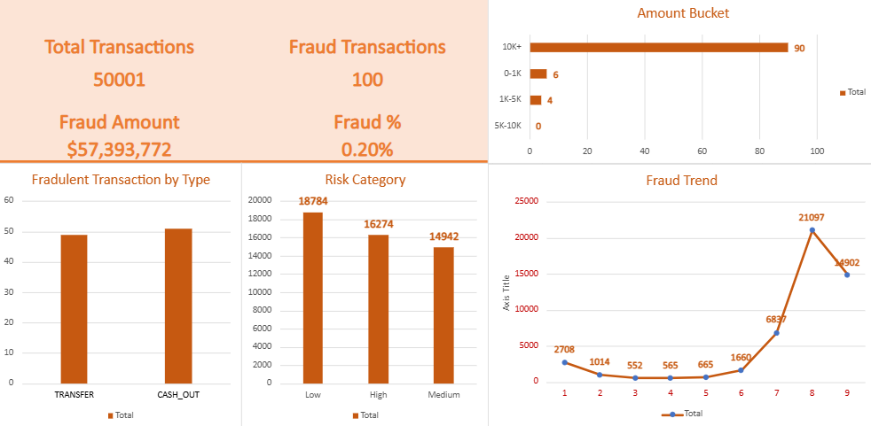

Microsoft Excel (Online) | Pivot Tables | Risk Analytics | Fraud Detection

The organization was experiencing increasing financial risk due to undetected fraudulent transactions. There was no centralized system to monitor transaction patterns, identify anomalies, or classify high-risk activity. This made it difficult to proactively prevent fraud and ensure financial security.
Fraud activity was not random and followed clear behavioral patterns based on transaction type, transaction value, and timing. Transactions above 10K recorded the highest number of fraudulent cases, indicating that higher-value transactions require closer monitoring. Fraud was concentrated exclusively in CASH_OUT and TRANSFER transactions, with CASH_OUT recording the highest number of fraudulent cases. Combining transaction amount, transaction type, timing, and risk scoring enables earlier detection of suspicious activity and helps reduce potential financial losses.
• Fraud Detection Rate (%)
• Total Fraudulent Transactions Identified
• Total Transaction Volume
• Total Financial Loss due to Fraud
Microsoft Excel (Excel for Web), Pivot Tables, Pivot Charts, Data Cleaning, Data Analysis